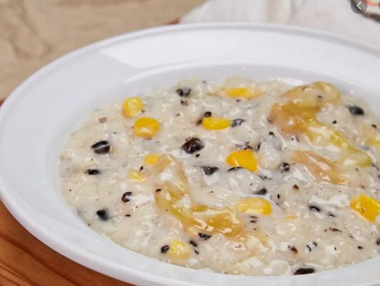

Ingredients
- 6 cups coconut milk
- 3/4 cups sweet rice malagkit
- 1 cup toasted mung beans cracked
- 1 cup sweet corn
- 1 cup granulated white sugar
- 1 teaspoon vanilla extract
- 1/4 teaspoon salt optional
Preparation
- Pour the coconut milk in a cooking pot. Let boil.
- Stir-in the sweet rice (also known as glutinous rice). Cook for 5 minutes in medium heat while stirring every minute.
- Add the toasted mung beans. Stir and cook for 6 to 8 minutes.
- Stir the corn in the pot. Continue to cook while constantly stirring for 8 to 10 minutes.
- Add the sugar stir.
- Pour-in the vanilla extract. Stir and cook until the mung beans are soft. Add salt, if preferred.
- Transfer to a serving bowl. Serve hot.